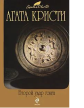

Старинный особняк, который считают проклятым; древнее цыганское заклятие; песенка на стихи Блейка, строчка из которой и дала название роману; убийство, кажущееся поначалу обычным убийством ради наследства, но оказавшееся отнюдь не единственным, - все смешалось в романе "Ночная тьма"... Также в книгу вошфел сборник рассказов "Случай в Поллензе". В некоторых из этих рассказов появляются любимые герои Агаты Кристи - Паркер Пайн, Харли Кин, Эркюль Пуаро, - а некоторые рассказы совершенно самостоятельны.